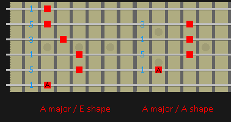
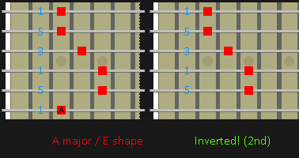
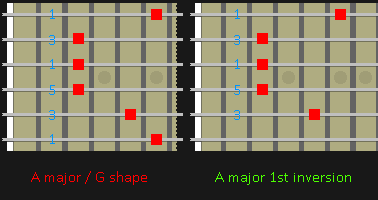
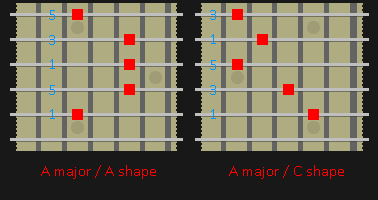

GROWL
I'd rather be playing guitar
FR
 EN
EN
Chord inversions are THE definitive way to add interest to a chord progression either in writing or improvisation. This is because instead of changing the pitch content of a chord by moving elsewhere, we just re-hash the chord we are already playing. So if you have a progression written and you like it but it lacks interest: THIS IS YOUR SOLUTION! Your mileage here will depend on your setup. If you intend to work with a bass player then communication here is vital because changing your chord root will highly influence the stability of the sound and the requirements on the bass player.
SO WHAT ARE INVERSIONS?
An inversion of a chord is basically any form of the chord that doesn't use the normal root as its bass. We can use the third as bass (1st inversion) or the 5th (2nd inversion). For example, the F# major chord (F#,A#,C#) is inverted in any situation where F# isn't played as the lowest note. 1st inversion is (A#,C#,F#), 2nd inversion is (C#,F#,A#).
Here are some examples for the A major chord!
If you play these chords you will find that they sound intrinsically the same but somehow different and more open. That's because although your ear still detects an AM chord, the bass note is throwing it slightly.
The examples above have their notes in an order you might not expect to find them in AM chords, but that is fine. (C#,A,E) and (C#,E,A) are equally valid inversions of AM. Inversions can also be extended to contain 7ths and further too but for the sake of simplicity we'll just look at triads for now.
SO WHERE DO I USE THE CHORDS?
An inversion can be played almost anywhere that you would use the non-inverted form. In fact switching between the inverted forms in sequence can sound great! Check out Pretty Little Ditty by The Red Hot Chilli Peppers. The only place where you probably want to be careful is on a cadence, the final closing change in a progression. Using the inverted version of a chord here will weaken your change and deflate the cadence. Although, you might actually want that! Just bear it in mind.
THAT'S ALL VERY NICE BUT DO I HAVE TO LEARN 100 NEW CHORDS?
Well yes, and no. If you think about it, every chord that you already play probably contains the inversions already! Just don't play the bass note and there... inversion! Take for example your basic moveable barre shapes. If you lop off the bass note these instantly give you the 5th, root and then third of the chord.
If you make sure that your practice routine covers the 5 versions of triad chords - see CAGED, then you are by default also practising inversions. Where things get a little trickier is when you want to use an inverted chord that has it's bass note on the low E string. That is going to generate slightly different positions than you are used to. We'll cover them in another lesson.
THE 5 MAJOR CHORD SHAPES AS NUCLEI FOR INVERSION
To get us started here is a quick technique for rapidly finding inverted chords to play without having to roam the fretboard trying to remember where the 3rd or 5th of a chord can be found. When I first started to play inversions that was an issue for me, particularly trying to throw these chords into improvisation. This quick trick though let's you shortcut your way to two easy options!
Let's say your progression calls for an A major chord but we want to play an inversion. First, find and fret the E shape barre chord for A major. Now cut it's head off! Already we have an inverted chord made of (E,A,C#), that's one.
Reset your fingers to A major on the 6 string again but now using the G shape major chord. Cut the head off again and what do we have... (C#,E,A). Another easy to find inversion.
EXTENDING THIS EXERCISE AND MORE COMPLICATED INVERSIONS
So we have a way of rapidly generating inverted chords just by finding the normal chord root. What else can we do? The immediate logical progression is to try the same process but using the A string for your usual root note and then cutting the head off there. If we do that, our inversions are formed from the A major chord shape and C major shape chords respectively.
By this point you will already be wondering why are we only using four strings for some chords!? Well, we don't have too. Use your knowledge of the pentatonic scales to extend the inverted chords with other 1,3 or 5 notes.
A FINAL WORD ON CONSTRUCTING INVERTED CHORDS
When you build a new chord pay attention to what notes you repeat and leave out. It is always a good idea to repeat 1. Usually a bad idea to repeat 3. Normally okay to repeat OR leave out 5. For more on this see the forthcoming Chord Construction article.